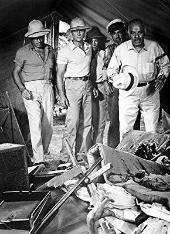

Meine Filme

Darsteller Nestor Paiva
Alle Darsteller
Nr.
Titel
Jahr
FSK
Minuten
Auflösung
IMDB
Meta
Genre
7226
Farm der Gehetzten, Die
1947
16
94
1080p
6.9 / 10
0
Western
11435
Fort der mutigen Frauen, Das
1957
16
81
1080p
6.4 / 10
0
Action
3112
Um jeden Preis
1956
83
720p
5.5 / 10
0
Western
9918
Viva Zapata
1952
12
113
720p
7.5 / 10
0
Drama
8846
Was der Himmel erlaubt
1955
12
88
1080p
7.7 / 10
0
Drama